Notifications on your phone
Your server tells your phone about new messages through a Firebase project of your own. You set it up once, from a computer.
What Firebase is for
Android puts apps to sleep to save battery, so Message Link can't keep its own connection open all day. Firebase Cloud Messaging is how Android apps get woken up: your server hands a notification to Google, and Google delivers it to your phone.
- The project is yours, made with your own Google account, and it's free. No one else's service is in between.
- Each notification is sealed for the phone it goes to. Google carries it without being able to read it.
- A phone needs it before it can join the server: the server shows no phone code until notifications are set up.
Make the project
Open Firebase's console and sign in. Use a personal Google account: a work or school account's organisation often blocks the key file you need.
-
Create a project. Choose Get started by setting up a Firebase project.
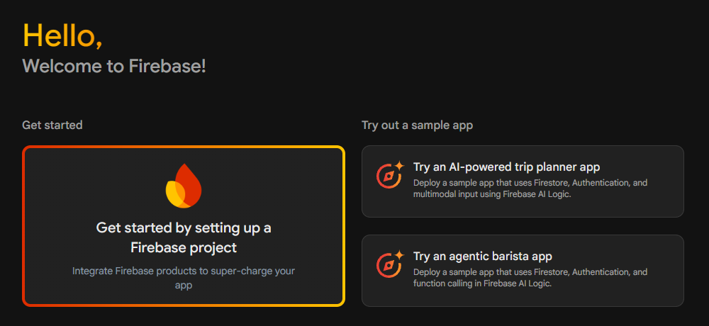
Name it Message Link Notifications; any name works. Accept Firebase's terms (it asks only the first time), turn off Join the Google Developer Program, and choose Continue.
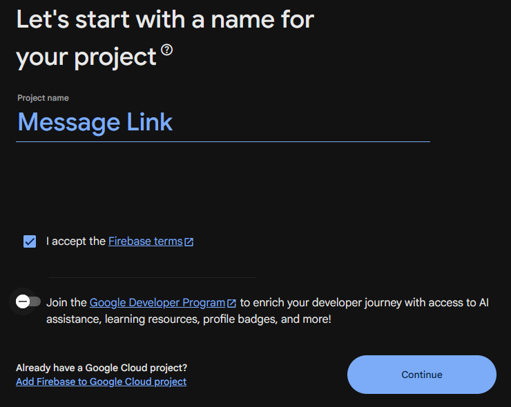
Turn off Enable Gemini in Firebase and choose Continue. Message Link doesn't use it.
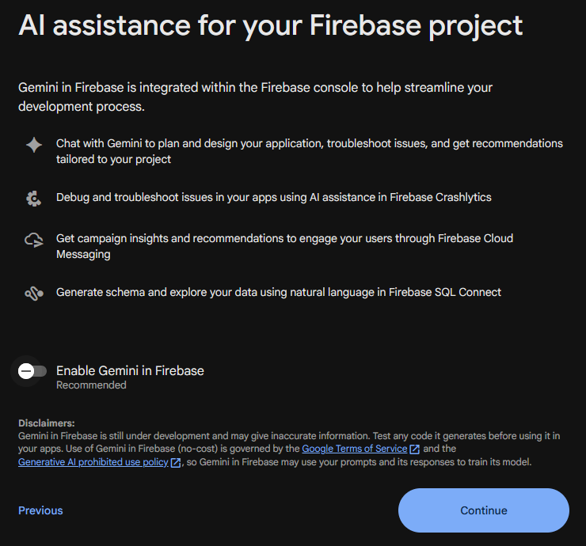
Turn off Enable Google Analytics for this project and choose Create project. When Firebase says the project is ready, choose Continue.
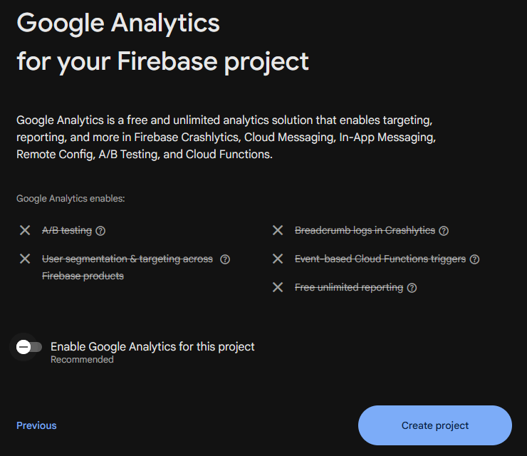
-
Add the Android app. On the project's page, choose Add app, then the Android icon.
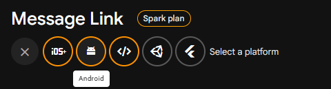
Enter this package name, leave the nickname empty, and choose Register app:
com.wrenchware.messages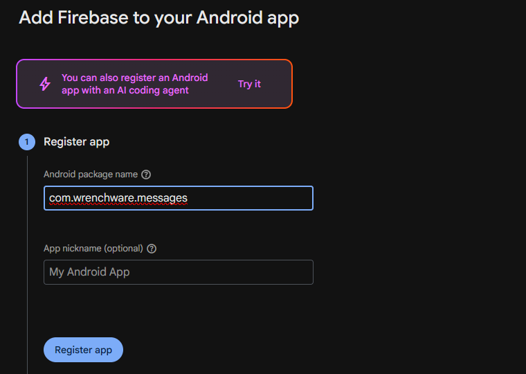
-
Download
google-services.jsonwith the button Firebase shows next. The rest of that step is for app developers: just choose Next.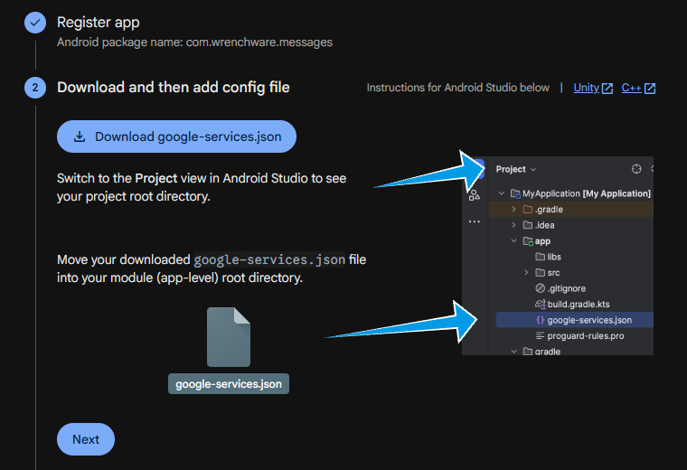
Firebase then shows code for adding its SDK. Message Link already has it, so choose Next, then Continue to console.
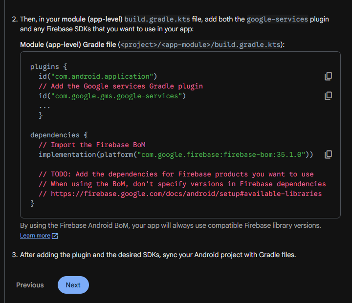
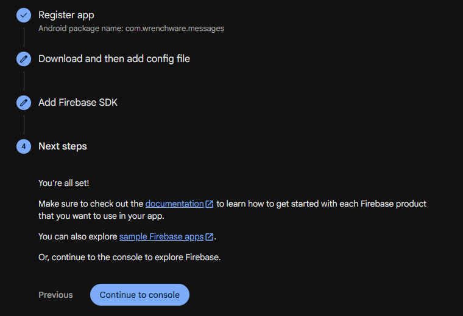
If you missed the download, it's in Project settings, General, under your Android app.
-
Make a private key. Open Settings, then Service accounts.
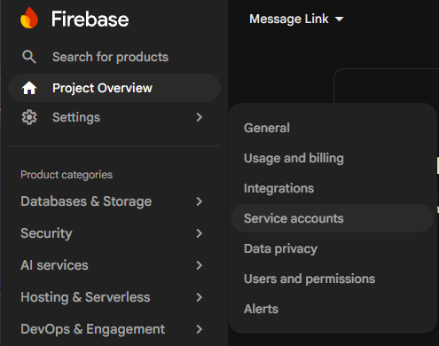
Choose Generate new private key. You don't need to change the language above it.
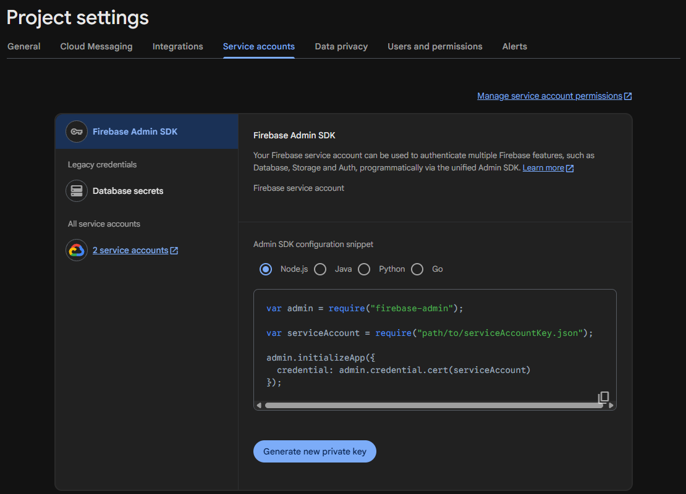
Choose Generate key. It downloads a second file. That file is a secret: give it only to your server, and delete your copy once the server has it.
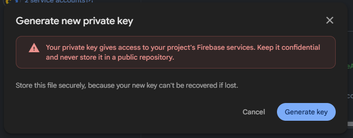
On the server's page
In the Notifications step of the server's setup, choose Set up notifications…. Afterwards it's the server's Notifications page.
Drop both files here, or Choose files, in any order. The page ticks each file as it arrives and says plainly if something is missing. Once it has the first file, its links go straight to your project's pages. Enter the server password and choose Turn on notifications.
The server checks them with a trial send that goes nowhere. It proves the Cloud Messaging API is on and the key is allowed to send. If not, the page says what to fix and links to it.
Send test to one of your phones, beside it on the Notifications page. The phone answers when it shows it, so the page says something like "Arrived on Pixel in 2 s", or what went wrong.
Phones that are already joined sign up for notifications straight away; there's nothing to restart. The Notifications page then shows the last notification sent, any failures for each phone with the reason, and phones that haven't signed up.
If it doesn't work
- The phone says "Your server's Firebase project has no app for this version of Message Link"
- Add an Android app with the package name
com.wrenchware.messagesto the project, downloadgoogle-services.jsonagain and give it to the server. The server's page names the phone too. - The check says Cloud Messaging is off
- Turn on the Firebase Cloud Messaging API for the project. The page links to it.
- Can't create a private key?
- The Google account belongs to an organisation that blocks key files. Make the project with a personal Google account instead.
- Changing projects
- Choose Replace… beside the project on the Notifications page and give it the new project's two files. Phones sign up again by themselves.